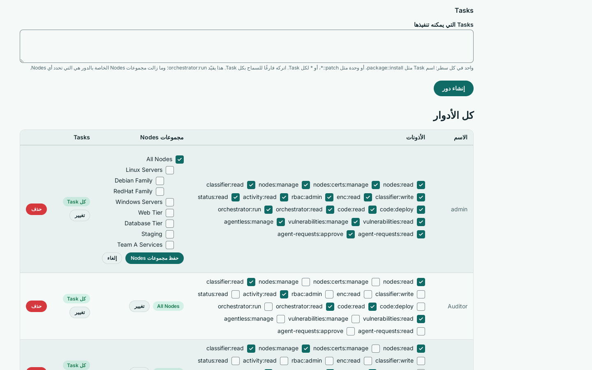

الاستخدام
المستخدمون والأدوار والرموز
امنح الأشخاص الوصول عبر الأدوار والأذونات، وسجّل الدخول عبر موفّر الهوية لديك، وأصدِر رموزًا للبرامج.
كل شيء في وحدة التحكم محمي بإذن، وكل إذن يصل إلى الشخص عبر دور. أما البرامج، مثل enc-bridge، فتستخدم رموز الخدمة بدلًا من ذلك.
تحتاج إدارة المستخدمين والأدوار والرموز إلى rbac:admin.
الأذونات
| الإذن | يتيح |
|---|---|
nodes:read |
رؤية الـ Nodes والـ Facts والـ Reports والحزم والتحديثات المعلّقة وحالات الشهادات الخاصة بها |
nodes:manage |
حذف الـ Nodes، وضبط عدد مرات مسح وحدة التحكم بحثًا عن التحديثات المعلّقة |
nodes:certs:manage |
توقيع الشهادات وإبطالها وتنظيفها - ما يعادل إدارة الـ CA |
classifier:read |
رؤية مجموعات الـ Nodes |
classifier:write |
إنشاء مجموعات الـ Nodes وتغييرها وحذفها |
enc:read |
قراءة التصنيف، كما يفعل openvoxserver |
code:read |
رؤية المستودعات وعمليات الـ deploy |
code:deploy |
بدء عمليات الـ deploy |
orchestrator:read |
رؤية الـ Jobs |
orchestrator:run |
بدء الـ Jobs (تشغيلات Puppet والـ Tasks والـ Plans وتشغيلات التصحيح)، وتبديل إبلاغ الـ Node عن الحزم، ومسح الـ Nodes بحثًا عن التحديثات المعلّقة |
vulnerabilities:read |
رؤية اكتشافات الثغرات |
vulnerabilities:manage |
تهيئة مزوّدي الثغرات |
agentless:manage |
إضافة أهداف SSH التي بلا وكيل وبيانات الاعتماد المشتركة وتغييرها وحذفها، والوثوق بمفاتيح مضيفيها |
activity:read |
رؤية سجل النشاط |
status:read |
رؤية صفحة النظام |
agent-requests:read |
رؤية ما طلب وكلاء الذكاء الاصطناعي تشغيله |
agent-requests:approve |
الموافقة على تلك الطلبات ورفضها |
rbac:admin |
إدارة المستخدمين والأدوار ورموز الخدمة ورموز الوكلاء |
يحصل المسؤول التمهيدي على كل الأذونات. والإذن الذي يُضاف في إصدار أحدث من وحدة التحكم لا يُضاف أبدًا إلى الأدوار الموجودة نيابة عنك، لذا بعد الترقية امنح الأذونات الجديدة في صفحة الأدوار للأدوار التي ينبغي أن تحملها.
امنح شخصًا الوصول
- افتح الإدارة، ثم الأدوار، وأنشئ دورًا بالأذونات التي تحتاج إليها المهمة - على سبيل المثال،
nodes:readوclassifier:readوorchestrator:readلمن يراقب ولا يغيّر. - افتح المستخدمون، وأنشئ المستخدم، وأسنِد إليه الدور.
أذونات المستخدم هي مجموع كل أدواره. ولمنح الأدوار نفسها لفريق كامل، استخدم مجموعة مستخدمين.
كلمات المرور والقفل
تشمل هذه القواعد الحسابات التي تسجّل الدخول باسم مستخدم وكلمة مرور. ولا تشمل من يسجّلون الدخول عبر موفّر الهوية لديك، ولا رموز الخدمة. ويضبطها مسؤول (rbac:admin) تحت الإدارة، ثم سياسة الحسابات. ويسري التغيير فورًا، على كل مثيل من وحدة التحكم.
قواعد كلمة المرور
| القاعدة | ما لم تُغيَّر | يمكن أن يكون |
|---|---|---|
| الحد الأدنى للطول | 12 حرفًا | من 8 إلى 72 |
| يجب أن تحتوي على حرف صغير، وحرف كبير، ورقم، ورمز | لا شيء منها مطلوب | كلٌّ منها يمكن تشغيله أو إيقافه |
قاعدتان لا يمكن إيقافهما: لا يجوز أن تكون كلمة المرور هي اسم مستخدم الحساب، ولا أن تكون أطول من 72 بايت.
تُفحص كلمة المرور حين تُضبط: حين يُنشئ مسؤول مستخدمًا أو يضبط كلمة مرور مستخدم، وحين يغيّر شخص كلمة مروره تحت التفضيلات. ويسرد كلٌّ من تلك النماذج القواعد، ويَسِم القواعد التي لم تستوفها كلمة المرور المرفوضة.
لا تُفحص كلمات المرور الموجودة مرة أخرى. فبعد أن تشدّد القواعد، يظل الجميع قادرين على تسجيل الدخول؛ وتنطبق القواعد الجديدة في المرة التالية التي تتغيّر فيها كل كلمة مرور.
القفل
بعد 10 محاولات فاشلة متتالية لتسجيل الدخول بكلمة المرور، يُقفل الحساب لمدة 15 دقيقة. ويمكن تغيير الرقمين كليهما (من 3 إلى 100 محاولة؛ ومن 1 إلى 1,440 دقيقة)، ويمكن إيقاف القفل.
- ما دام الحساب مقفلًا، تُرفض كلمة مروره حتى لو كانت صحيحة. ومحاولات تسجيل الدخول الفاشلة أثناء القفل لا تطيل مدته.
- ينتهي القفل من تلقاء نفسه. وتسجيل الدخول الناجح يعيد العدّ إلى الصفر.
- تُحتسب محاولات تسجيل الدخول الفاشلة مجتمعةً عبر كل مثيلات وحدة التحكم.
- لا تقول صفحة تسجيل الدخول إن الحساب مقفل. بل تعطي الإجابة نفسها التي تعطيها لكلمة مرور خاطئة، لأن قول «مقفل» سيخبر المهاجم بأسماء المستخدمين الموجودة. وتذكر رسالة كل تسجيل دخول فاشل أن الحسابات تُقفل بعد محاولات متكررة.
القفل يتعلق بتخمين كلمات المرور، لذا لا يوقف إلا تسجيل الدخول بكلمة المرور:
- تستمر الجلسات المفتوحة بالفعل.
- يظل تسجيل الدخول عبر موفّر الهوية لديك يعمل.
- لا تتأثر رموز الخدمة.
- تغيير كلمة مرورك يتطلب كلمة المرور الحالية. وتُحتسب كلمة المرور الحالية الخاطئة محاولة تسجيل دخول فاشلة، ويُرفض التغيير ما دام الحساب مقفلًا.
فتح قفل حساب
افتح الإدارة، ثم المستخدمون. يعرض الحساب المقفل مقفل حتى والوقت. اختر فتح القفل، أو ضبط كلمة المرور لمنح المستخدم كلمة مرور جديدة، وهذا يفتح قفل الحساب أيضًا.
إذا أُقفل حساب المسؤول الوحيد ولم يكن بوسع أحد غيره فتح قفله، فانتظر حتى ينتهي القفل. ولمنع شخص من إبقاء حساب مقفلًا بإفشال تسجيلات الدخول عمدًا، ضع وحدة التحكم خلف شيء يحدّ من الطلبات إلى /api/v1/auth/login، أو أوقف القفل واعتمد على ذلك بدلًا منه.
تُكتب عمليات القفل وفتح القفل وكلمات المرور المرفوضة وتغييرات السياسة في سجل التدقيق؛ وتظهر عمليات القفل وفتح القفل وتغييرات السياسة أيضًا في صفحة النشاط.
امنح الأدوار لمجموعة
مجموعة المستخدمين مجموعة مسمّاة من المستخدمين. والأدوار الممنوحة لمجموعة يحملها كل عضو فيها، إضافة إلى أي أدوار يحملها بنفسه، فحين يتغيّر فريق تغيّر المجموعة بدل كل حساب على حدة.
- افتح الإدارة، ثم مجموعات المستخدمين، وامنح المجموعة اسمًا واختر إنشاء مجموعة.
- اختر تغيير تحت الأعضاء وحدّد المستخدمين الذين ينتمون إليها.
- حدّد الأدوار التي ينبغي أن تمنحها المجموعة، في عمود الأدوار.
الشخص الذي ينتمي إلى عدة مجموعات، أو يحمل دورًا بنفسه وعبر مجموعة معًا، يحمله مرة واحدة. وإزالة الدور من الشخص تُبقي منح المجموعة، وإزالته من المجموعة تُبقي ما يحمله بنفسه.
تعرض صفحة المستخدمون مجموعات كل شخص والأدوار التي يحملها عبرها، مثل «Patcher via Web ops». ولا يمكن إلغاء تحديدها هناك: غيّر المجموعة. وتعرض صفحة الأدوار المجموعات الممنوح لها كل دور.
المجموعات والقيود
المجموعة تضيف أدوارًا؛ ولا تدمجها. يظل كل دور ينطبق على مجموعات الـ Nodes الخاصة به، وعلى قائمة الـ Tasks الخاصة به إن كانت له واحدة، كما في الأدوار المُسنَدة إلى شخص مباشرة. فمن ينتمي إلى مجموعة تمنح دورًا مقصورًا على patch::* على خوادم الويب، ومُسنَد إليه أيضًا دور يسمح بكل Task على خوادم قواعد البيانات، يستطيع تشغيل Tasks التصحيح على خوادم الويب وأي شيء على خوادم قواعد البيانات.
الحذف والإزالة
- حذف مجموعة يسلب أعضاءها أدوارها. وحين يكون لها أعضاء تذكر وحدة التحكم عدد الأشخاص المتأثرين قبل الحذف.
- حذف مستخدم يزيله من مجموعاته، وحذف دور يزيله من المجموعات التي تحمله.
- لن تحذف وحدة التحكم مجموعة، ولن تسحب منها دورًا، ولن تزيل عضوًا، إذا كان ذلك سيترك الجميع دون
rbac:admin.
متى يسري التغيير
الانضمام إلى مجموعة أو مغادرتها، ومنح أدوار مجموعة أو سحبها، يسري في المرة التالية التي تتجدد فيها جلسة الشخص، في غضون 15 دقيقة، كما هو الحال مع أي تغيير في الأدوار. ويُفحص الـ Job المجدول مقابل مجموعات مالكه في كل مرة يُطلق فيها.
يُكتب كل تغيير على مجموعة وأعضائها وأدوارها في سجل التدقيق تحت الفئة rbac.
قصر الدور على بعض الـ Nodes لديك
تنطبق أذونات الدور على مجموعات الـ Nodes. ويُمنح الدور الجديد على All Nodes، أي الأسطول بأكمله. ولقصر فريق على خوادمه، امنح الدور على مجموعة ذلك الفريق بدلًا من ذلك:
- تأكّد من أن مجموعة Nodes تحتوي بالضبط على الـ Nodes التي ينبغي أن يراها الفريق - راجع تصنيف الـ Nodes.
- افتح الإدارة، ثم الأدوار.
- في عمود مجموعات Nodes الخاص بالدور، اختر تغيير، وألغِ تحديد All Nodes، وحدّد مجموعة الفريق.
- اختر حفظ مجموعات Nodes.


المنح على مجموعة يشمل كل مجموعة تحتها، فالدور على Linux Servers يرى أيضًا الـ Nodes في Debian Family. ويحصل أعضاء الدور على التغيير في المرة التالية التي تتجدد فيها جلستهم، في غضون 15 دقيقة؛ والـ Node الذي يدخل المجموعة أو يخرج منها يظهر أو يختفي في غضون دقيقة.
من هو مقيَّد بهذه الطريقة لا يرى إلا الـ Nodes الخاصة به في كل مكان تظهر فيه بيانات الـ Nodes: قائمة الـ Nodes، والـ Facts والـ Reports والحزم والثغرات لكل Node، وأرقام لوحة Dashboard، وفهرس الحزم، وقائمة الثغرات، وصفحة Jobs، وأعداد الـ Nodes في صفحتَي المجموعات وCode. والـ Node الواقع خارج مجموعاته يستجيب تمامًا كـ Node غير موجود. وتذكر صفحة Nodes المجموعات التي يراها.
تحدّ المجموعات نفسها مما يستطيعون فعله. فتشغيل Puppet أو Task أو Plan، وتبديل إبلاغ الـ Node عن الحزم، وترقية وكيله، وحذفه، وتوقيع شهادته أو إبطالها أو تنظيفها، كلها تتطلب أن يكون الـ Node في مجموعات دور يمنح ذلك الإذن. والإجراء الذي يذكر Node خارجها يُرفض، وتذكر وحدة التحكم تلك الـ Nodes. وحين يذكر إجراء عدة Nodes ويكون أحدها خارجها، لا يُنفَّذ شيء على أيٍّ منها.
يمكن أيضًا اختيار Nodes الـ Job باستعلام أو بمجموعة Nodes بدل الاسم - راجع تشغيل الـ Jobs. وهذه تُضيَّق بدل أن تُرفض: فمن هو مقصور على بعض مجموعات الـ Nodes يحصل على الـ Nodes المطابقة الموجودة في مجموعاته، ولا يُخبَر بشيء عن البقية. ولا يمكن أن تحتوي استعلاماته على استعلام فرعي، كان يمكن لولا ذلك أن يُستخدم لمعرفة Nodes خارج مجموعاته.
يعمل الـ Job المجدول باسم مالكه، بأدوار المالك كما هي في كل مرة يبدأ فيها. وإزالة دور شخص ما توقف جدولاته عن بدء أي شيء؛ وتضييقه يضيّق ما تعمل عليه جدولاته. يرى الأشخاص جدولاتهم ويغيّرونها، ولا يرى جدولات الجميع ويغيّرها إلا دور ممنوح على All Nodes.
رؤية أكثر مما تستطيع تغييره
كل إذن مقيَّد بالأدوار التي تمنحه، لذا قد تختلف الرؤية عن التصرف. ولتتيح لفريق رؤية الأسطول بأكمله لكن تشغيل Puppet على خوادمه فقط، امنح أفراده دورين:
| الدور | الأذونات | مجموعات Nodes |
|---|---|---|
| قرّاء الأسطول | nodes:read, classifier:read, orchestrator:read |
All Nodes |
| مشغّلو الويب | orchestrator:run |
Web Servers |
يرون كل Node وكل Job، ويُرفض أي تشغيل على خادم قاعدة بيانات.
ما لا تقيّده مجموعات الـ Nodes
- صفحة النشاط. إنها سجل التدقيق وتذكر كل Node. امنح
activity:readفقط لمن يحق لهم معرفة الأسطول بأكمله. - تعريفات مجموعات الـ Nodes. كل من لديه
classifier:readيرى كل مجموعة، بما في ذلك أسماء الـ Nodes المثبّتة فيها، ومن لديهclassifier:writeيستطيع تغيير أي مجموعة. - رموز الخدمة، التي تشمل الأسطول كله دائمًا. ويمكن قصرها على بعض الـ Tasks، كما يمكن مع الدور - راجع إصدار رمز لبرنامج.
- الـ Plans المحفوظة. كل من لديه
orchestrator:readيرى كل Plan، وكل من لديهorchestrator:runيستطيع تغيير أيٍّ منها. أما تنفيذ أحدها فيقتصر على الـ Nodes الخاصة بك. - عمليات deploy للكود، التي لا تتعلق بـ Node.
أمور ينبغي معرفتها
- الـ Node الذي لم يشغّل Puppet قط ليست لديه Facts، فلا يطابق قاعدة أي مجموعة. ولا يكون في مجموعات فريق ما إلا إذا كان مثبّتًا في إحداها. ويشمل ذلك الـ Nodes التي تنتظر توقيع شهاداتها - راجع إدارة شهادات الـ Nodes.
- الدور الذي ليست له أي مجموعات Nodes على الإطلاق يعرض التحذير لا توجد مجموعات Nodes. ولا تنطبق أذوناته على أي Node.
- يتبع سجل الـ Jobs المجموعات الحالية للـ Node. فحين ينتقل Node إلى مجموعة أخرى، تخرج الـ Jobs السابقة الخاصة به من عرض المجموعة القديمة معه.
قصر الدور على بعض الـ Tasks
يتيح orchestrator:run وحده لشخص ما تنفيذ كل Task تعرفها وحدة التحكم، على الـ Nodes التي يشملها الدور. ولتتيح لفريق تنفيذ Tasks التصحيحات ولا شيء غيرها، امنح دوره قائمة سماح للـ Tasks:
- افتح الإدارة، ثم الأدوار.
- في عمود Tasks الخاص بالدور، اختر تغيير.
- اكتب نمطًا واحدًا في كل سطر، ثم اختر حفظ Tasks. ونموذج دور جديد فيه الحقل نفسه.
النمط واحد مما يلي:
| النمط | يتيح |
|---|---|
package::install |
تلك الـ Task فقط |
patch::* |
كل Task في الوحدة patch، والـ Task الخاصة بالوحدة نفسها patch |
* |
كل الـ Tasks |
المطابقة دقيقة وحساسة لحالة الأحرف، فالنمط patch::* لا يسمح بـ patching::apply. ولا يُقبل أي شيء آخر: يُرفض النمط الذي فيه حرف بدل في أي موضع آخر، والسطر الفارغ، والحرف الكبير، ويحتفظ النموذج بما كتبته. ويجوز أن يحمل الدور حتى 20 نمطًا، كلٌّ منها حتى 64 حرفًا.
الدور الذي لا أنماط له يسمح بكل Task. وهكذا تُترك كل الأدوار الموجودة لديك، فلا يتغيّر شيء حتى تضيف نمطًا. والقائمة لا تفعل إلا تضييق orchestrator:run: فهي لا تمنح شيئًا أبدًا، وتظل مجموعات الـ Nodes الخاصة بالدور هي التي تحدّد الـ Nodes.
كيف تجتمع أدوار الشخص
تنطبق قائمة كل دور على مجموعات الـ Nodes الخاصة بذلك الدور، لا على كل مجموعات الشخص. فمن لديه هذان الدوران:
| الدور | مجموعات Nodes | Tasks |
|---|---|---|
| مصحّحو الويب | Web Servers | patch::* |
| مشغّلو قواعد البيانات | Database Servers | (كل الـ Tasks) |
يستطيع تشغيل patch::apply على خادم ويب وأي Task على خادم قاعدة بيانات، وتُرفض Task مثل package::install على خادم ويب. فامتلاك الدور الثاني لا يوسّع الأول.
حين تبدأ Task على Nodes مختارة باستعلام أو بمجموعة Nodes، تعمل على الـ Nodes المطابقة التي يحق للشخص تشغيلها عليها ولا يُخبَر بشيء عن البقية، كما في مجموعات الـ Nodes. ويُضيَّق الـ Plan إلى الـ Nodes التي يحق لـ كل خطوة Task فيه العمل عليها، فتظل كل خطواته تعمل على الـ Nodes نفسها. وقائمة الـ Nodes المسمّاة التي تتضمن Node لا يُسمح للـ Task بالعمل عليه تُرفض، مع ذكر اسمه.
كيف يبدو الرفض
بدء Task لا تسمح بها أدوار الشخص يُرفض بـ 403 مع اسم الـ Task؛ ولا يبدأ شيء. ويذكر الـ Plan الخطوة أيضًا، بصيغة step 2 (package::install). والـ Task غير الموجودة والـ Task التي لا يحق للشخص تشغيلها تُرفضان بالطريقة نفسها، فلا تكشف القائمة الـ Tasks الموجودة. وكل رفض مسجَّل في سجل التدقيق بصيغة task.denied، مع الشخص والـ Task والخطوة، ولا يتضمن معاملات الـ Task أبدًا.
ما لا تقيّده القائمة:
- تشغيلات Puppet، التي ليست Tasks.
- رؤية الـ Jobs وسجلها. فهي تحدّ مما يحق لشخص بدؤه.
- الأشخاص الذين يستطيعون القراءة فقط. من لديه
orchestrator:readدونorchestrator:runيرى كل Task في قائمة الـ Tasks.
لا يعرض مربع حوار تنفيذ Task، ومحرّر الـ Plan، ونموذج الجدولة إلا الـ Tasks التي يحق للشخص تشغيلها.
الـ Plans والجدولات
- حفظ Plan أو جدولة تتضمن Task لا يحق للشخص تنفيذها يُرفض، مع ذكر الخطوة والـ Task.
- الـ Plan الذي حفظه شخص آخر يعرض كل خطوة للشخص صاحب القائمة الأضيق، مع وسم الخطوات التي لا يحق له تنفيذها. ولا يستطيع تنفيذه، ولا حفظ تغييرات عليه دون إزالة تلك الخطوات.
- تُفحص الجدولة في كل مرة تبدأ فيها، مقابل أدوار مالكها كما هي حينئذ. وإذا لم يعد يحق للمالك تنفيذ إحدى الـ Tasks الخاصة بها، فلا يبدأ شيء ويُسجَّل الإطلاق على أنه تم تخطيه، مع ذكر الـ Task (والخطوة، في حالة الـ Plan).
متى يسري التغيير
تصل قائمة الدور إلى جلسات الشخص في المرة التالية التي تتجدد فيها، في غضون 15 دقيقة، مثل أي إذن آخر. وتلتقطها الجدولة عند بدئها التالي.
تنتقل قوائم الـ Tasks الخاصة بالشخص في رمز الوصول الخاص به. والحدود المذكورة أعلاه تُبقي الدور الواحد في حدود 1.3 KB تقريبًا على الأكثر، ومعظم الأشخاص يحملون بضعة أنماط قصيرة. إذا منحت شخصًا أدوارًا مقيَّدة كثيرة، فتحقّق من أن الوكيل العكسي (reverse proxy) أمام وحدة التحكم يقبل ترويسات طلب بهذا الحجم؛ فبعضها لا يسمح إلا بـ 8 KB.
سجّل الدخول عبر موفّر الهوية لديك
يمكن لوحدة التحكم أيضًا تسجيل دخول الأشخاص عبر OpenID Connect. ويظل تسجيل الدخول المحلي ورموز الخدمة يعملان إلى جانبه. سجّل وحدة التحكم لدى موفّر الهوية لديك، بعنوان إعادة توجيه https://console.example.com/api/v1/auth/oidc/callback، واضبط:
| الإعداد | ما هو |
|---|---|
CONSOLE_OIDC_ISSUER |
عنوان URL الخاص بمُصدِر الهوية لدى موفّرك |
CONSOLE_OIDC_CLIENT_ID, CONSOLE_OIDC_CLIENT_SECRET |
تسجيل وحدة التحكم |
CONSOLE_OIDC_REDIRECT_URL |
عنوان إعادة التوجيه المذكور أعلاه |
CONSOLE_OIDC_SCOPES |
القيمة الافتراضية openid profile email groups |
CONSOLE_OIDC_USERNAME_CLAIM |
المطالبة التي يُؤخذ منها اسم المستخدم الجديد؛ القيمة الافتراضية email |
CONSOLE_OIDC_ROLE_CLAIM |
المطالبة التي تسرد مجموعات الشخص؛ القيمة الافتراضية groups |
CONSOLE_OIDC_ROLE_MAPPING |
كائن JSON يربط قيم المطالبات بأسماء الأدوار، مثل {"platform-admins":"admin"}؛ ويجب أن يكون كل دور موجودًا مسبقًا، وتُتجاهَل القيم غير المربوطة |
تعرض صفحة تسجيل الدخول عندئذ تسجيل الدخول عبر SSO. وعند كل تسجيل دخول، تمنح وحدة التحكم الشخصَ الأدوار المربوطة التي تذكرها مطالباته (claims) حاليًا، وتزيل الأدوار المربوطة التي لم تعد تذكرها. أما الدور الذي أسنده مسؤول يدويًا فلا يُمَس أبدًا.
يجب أن يضع موفّر الهوية لديك مطالبات (claims) اسم المستخدم والمجموعات في رمز الهوية (ID token) نفسه، لا خلف نقطة نهاية معلومات المستخدم فحسب. بعض الموفّرين يستبعدونها من رمز الهوية افتراضيًا حين يُصدرون رمز وصول أيضًا، ويحتاجون إلى إعداد لتضمينها.
أصدِر رمزًا لبرنامج
لرمز الخدمة مجموعة ثابتة من الأذونات تُختار عند إنشائه، ولا تنتهي صلاحيته من تلقاء نفسه أبدًا. امنح كل برنامج رمزه الخاص، بما يحتاج إليه فقط:
- افتح الإدارة، ثم رموز الخدمة.
- تحت رمز خدمة جديد، سمّه واختر أذوناته.
- اختياريًا، تحت Tasks التي يمكنه تنفيذها، اسرد الـ Tasks التي يحق له بدؤها، نمط واحد في كل سطر، كما في الدور. اتركه فارغًا للسماح بكل Task. وتُثبَّت القائمة عند إنشاء الرمز.
- اختر إنشاء رمز خدمة، وانسخ الرمز: فهو يُعرض مرة واحدة.
حذف رمز خدمة يُبطله على كل مثيلات وحدة التحكم دفعة واحدة. وتسجيل الخروج يُبطل رموز تلك الجلسة بالطريقة نفسها.
لمنح وكيل ذكاء اصطناعي الوصول، استخدم رمز وكيل بدلًا من ذلك: إذ تنتهي صلاحيته، ويقتصر على مجموعات Nodes، وكل تغيير يطلبه ينتظر موافقة شخص ما. راجع السماح لوكلاء الذكاء الاصطناعي باستخدام وحدة التحكم.
احتفظ بسجل تدقيق
كل تغيير يُجرى عبر وحدة التحكم موجود في صفحة النشاط، التي تحتاج إلى activity:read. وبشكل منفصل، يمكن لوحدة التحكم كتابة سجل تدقيق لجامع سجلات، بمستوى واحد لكل فئة:
| الإعداد | الفئة |
|---|---|
CONSOLE_AUDIT_NODES |
الـ Nodes والشهادات |
CONSOLE_AUDIT_CLASSIFIER |
مجموعات الـ Nodes |
CONSOLE_AUDIT_RBAC |
المستخدمون ومجموعات المستخدمين والأدوار والرموز |
CONSOLE_AUDIT_AUTH |
عمليات تسجيل الدخول والخروج |
CONSOLE_AUDIT_CODE |
عمليات deploy للكود |
CONSOLE_AUDIT_ORCHESTRATOR |
الـ Jobs، والـ Tasks المرفوضة لمن لا تسمح بها أدوارهم |
CONSOLE_AUDIT_VULNERABILITIES |
مزوّدو الثغرات |
كلٌّ منها إما off، أو writes (الافتراضي: التغييرات وعمليات تسجيل الدخول)، أو full (وكل عملية عرض أيضًا). تذهب أحداث التدقيق إلى مخرجات سجل وحدة التحكم نفسها ما لم يحدّد CONSOLE_AUDIT_LOG_PATH ملفًا.